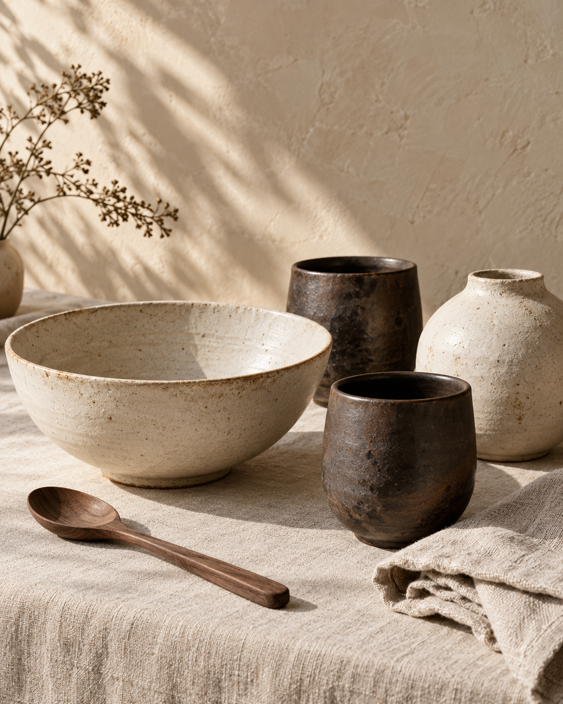
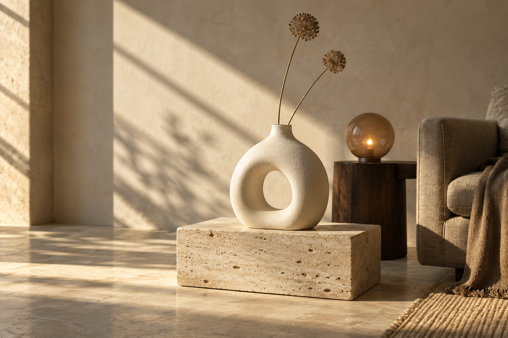

THE DAILY RITUALSoft form bowl
Stoneware · Chalk
Everyday, thoughtfully shaped
Quiet forms. Honest textures. Pieces that make the everyday feel a little more considered.
Discover the collection
The considered edit / 01
Not more. Just meaningful.
Explore our fictional collection.

THE DAILY RITUALStoneware · Chalk
Glass & walnut · Amber
A soft glow. A familiar corner.
A reason to stay a little longer.
Collection and prices are fictional portfolio content. The bag is a local demonstration.
Our point of view
FORME is a fictional collection built around a simple idea: the things we live with should earn their place. We imagine useful shapes, pleasing textures and quiet details that become part of your day.
Morning coffee. Light across a table. Your favourite corner. Good design lives in the small moments.
Find your everyday objectLess, but lovely.
Make space for the everyday.
Explore the edit